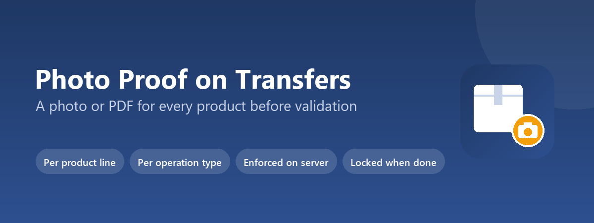

Requires a photo or PDF for every product processed before a transfer of the operation types you choose can be validated.
Keep picture evidence of what was received, issued or shipped. Tick the option on an operation type, and each product line processed in those transfers needs at least one photo or PDF. Warehouse staff take the picture with the phone camera or upload a file on the line, and the transfer cannot be validated until every processed product has its proof.
📷 Per product lineA camera button on each line opens its proof files, and the Proofs column turns red while a processed line has none. |
⚙️ Per operation typeSwitch the rule on only where you need it: receipts, deliveries, internal transfers and so on. |
🔒 Enforced everywhereThe rule is checked when the transfer is done, so it applies to the Validate button, the backorder window, the Barcode app and imports alike. |
📱 Works on a phoneOn a phone the files are added from the line's detail screen, straight from the camera. |
💬 Clear refusalValidation is refused with a message naming the products that still need proof. |
📝 Summary noteOnce done, one note on the transfer lists each product, its quantity and its number of files, who validated and when, with the files attached. |
Odoo 18.0 • Community & Enterprise • depends on Inventory • Licence LGPL-3
Odoo implementation and development. thecodelegion.com